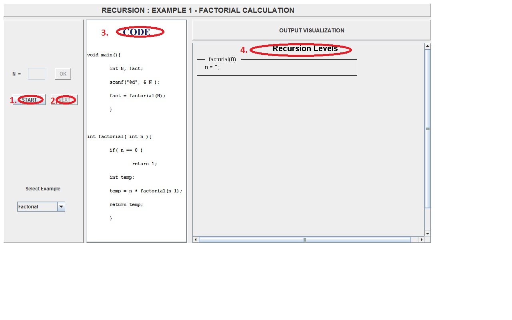
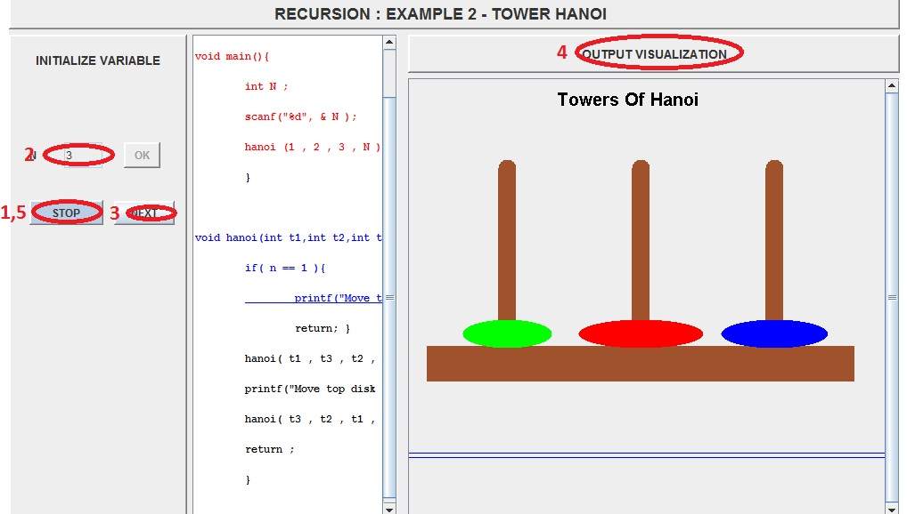

Sometimes solving a big problem may require us to solve smaller problems of similar nature. For example, computing the xth number in the fibonacci sequence may require us to find the x-1th and the x-2th numbers in the sequence. If we are able to break the main problem into smaller instances of the same problem again and again, so that eventually the smaller problems become trivial, then we can use the solutions to the trivial problems to progressively build bigger solutions. Consequently, we can reach the solution of our main problem. This concept when used in coding is called recursion.
For writing a recursive code for a problem, we simply call a function inside the definition of the same function. Thus the definition of GNU (the source of much free software) is said to be recursive because GNU stands for 'GNU's Not Unix', i.e. GNU is part of the definition of GNU! Or maybe two mirrors placed parallely! The nested images are a form of infinite recursion.

Recursion simply means applying a function as a part of the definition of that same function. Suppose we have to find the factorial of a number. The mathematical factorial function is defined as being the product of all the numbers up to and including the number, and the factorial of 1 is 1. Thinking about this, we see that another way to express this is that the factorial of N is equal to N times the factorial of (N-1).
Thus:
1! = 1 2! = 1 x 2 = 1! x 2 3! = 1 x 2 x 3 = 2! x 3 = 6 --- --- N! = 1 x 2 x 3 x .... (N-2) x (N-1) x N = (N-1)! x N
So we can express this as:
factorial(n):
if n == 1:
return 1
else:
return n * factorial(n-1)
The important thing to remember when creating a recursive function is to give an 'end-conditions' or the 'base cases'. We don't want the function to keep calling itself forever, do we? Somehow, it should know when to stop. So, we give it a base case. Like here the base case is for n=1. The key to making this work is that there must be a terminating condition such that the function branches to a non-recursive solution at some point.
Hence a feasible recursive solution will have the following two properties:
1. A simple base case (or cases), and
2. A set of rules which reduce all other cases toward the base case.

- To understand that some problems can be broken down into smaller similar problems
- To solve such problems using recursive procedures


Experiments will show you how to calculate factorial using recursion and how to solve the classical puzzle of Towers of Hanoi.


Calculating Factorial using a recursive procedure
- Press start to start the experiment and select a value of N.
- Press next to see the execution of the code
- Relavant line in the code is shown here
- The output of the code is shown in the right

Towers of hanoi
- Press start to start the experiment.
- Select the value of N.
- Press next to see the execution of the code
- The output of the code is shown in the right
- You can stop the code using stop button
